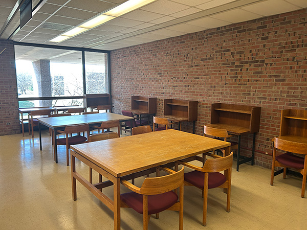

The Ecological Niches of the Library of Science and Medicine
In an effort to better understand the environment of the LSM, I have observed the differing ecological niches present within. I divided the available study spots into 3 main categories, based on the type of study they facilitated: solitary study, group study, or a mix of both in the same area. I further divded these categoes based on whether they were lit by natural or artifical light. I found that collaborative spaces predominate in the library, especially in areas with natural lighting. I also discovered that the solitary study spaces were almost exclusively lit by artifically, and that the greatest amount of solitary spaces were found on the third floor, where quiet study is mandated.
These categories (social structure and lighting) were selected to demonstrate how environmental factors and human behavior interact. In categorizing these spaces and placing them in contrast, I hope to encourage readers to think about the library not as a uniform setting, but as an environment that influences behavior based off of physical conditions and social context.
In the future, I am considering expanding the collection to include additional variables, such as time of day and noise level. I also plan to add additional context for each image, like on what floor the image was taken, at what time of day, and why I believe a space is effective of ineffective for certain types of studying.
Solitary spots with natural lighting
 This space is on the second floor, facing the east wall. On a sunny day, the window proves to be an exceptional source of natural light. Woody's Cafe is in clear view for the hungry student looking to scope out the lunch line.
This space is on the second floor, facing the east wall. On a sunny day, the window proves to be an exceptional source of natural light. Woody's Cafe is in clear view for the hungry student looking to scope out the lunch line.
Solitary spots with artifical lighting
 This is a cluster of desk cubicles tucked into the back corner of the west wall on the third floor. More information about this specific niche is available on our map page.
This is a cluster of desk cubicles tucked into the back corner of the west wall on the third floor. More information about this specific niche is available on our map page.
Collaborative spots with natural lighting
 This collection of desks on the third floor has ample natural lighting from the west side window. Read more about this location on our map page.
This collection of desks on the third floor has ample natural lighting from the west side window. Read more about this location on our map page.
 This assortment of beanbags and comfy chairs in front of the northern window on the second floor is great for students looking to relax and talk with their friends, without losing track of the day
This assortment of beanbags and comfy chairs in front of the northern window on the second floor is great for students looking to relax and talk with their friends, without losing track of the day
 This is a more secluded group space on the second floor that works best for smaller groups. It faces the southern wall.
This is a more secluded group space on the second floor that works best for smaller groups. It faces the southern wall.
 Found on the west side of the second floor, this is another spot best suited to smaller groups. There is also a clear view of the parking lot, making perfect for watchful students who may have parked without a permit
Found on the west side of the second floor, this is another spot best suited to smaller groups. There is also a clear view of the parking lot, making perfect for watchful students who may have parked without a permit
Collaborative spots with artifical lighting
 Located in the center of the second floor, these long tables are perfect for hosting large groups.
Located in the center of the second floor, these long tables are perfect for hosting large groups.
 Located in the northeast corner of the third floor, this space is often utilized by students who want to study in quiet, but remain in a group. Read more about this niche on our map page
Located in the northeast corner of the third floor, this space is often utilized by students who want to study in quiet, but remain in a group. Read more about this niche on our map page
 Found in the center of the third floor, this is one of the first tables students encounter, and so it proves to be a popular location.
Found in the center of the third floor, this is one of the first tables students encounter, and so it proves to be a popular location.
 As a private study room on the third floor, this space is one of few locations on the third floor where talking is permitted. Read more about this niche on our map page
As a private study room on the third floor, this space is one of few locations on the third floor where talking is permitted. Read more about this niche on our map page
Blended spaces with natural lighting

This space faces the southern window on the second floor. With both large tables and study cubicles, this corner provides both solitary and group space.Blended spaces with artifical lighting
 Located adjacent to the study rooms on the third floor, this corridor has study cubicles and couches, fostering an environment for both solo work and relaxation among friends.
Located adjacent to the study rooms on the third floor, this corridor has study cubicles and couches, fostering an environment for both solo work and relaxation among friends.
Additional Data
| Use | Lighting | Total # of Seats: 1st floor | Total # of Seats: 2nd floor | Total # of Seats: 3rd floor | Average Busyness |
|---|---|---|---|---|---|
| Solitary | Natural | 17 | 25 | 0 | |
| Solitary | Artifical | 11 | 20 | 47 | |
| Group | Natural | 30 | 42 | 18 | |
| Group | Artifical | 6 | 38 | 16 | |
| Mixed | Natural | 12 | 20 | 0 | |
| Mixed | Artifical | 8 | 15 | 15 |